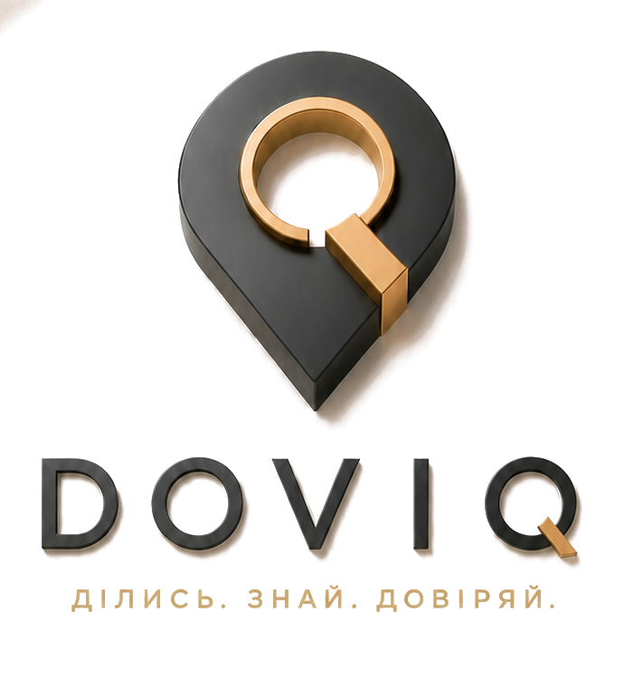
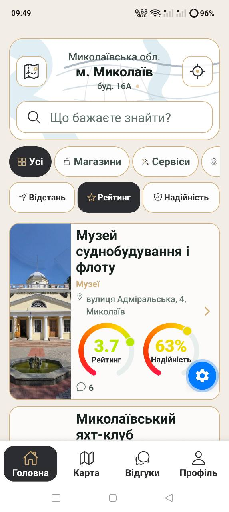
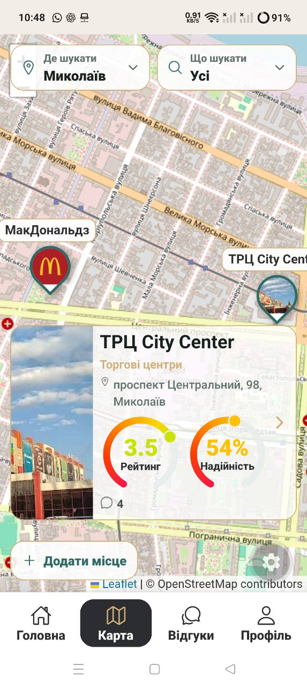
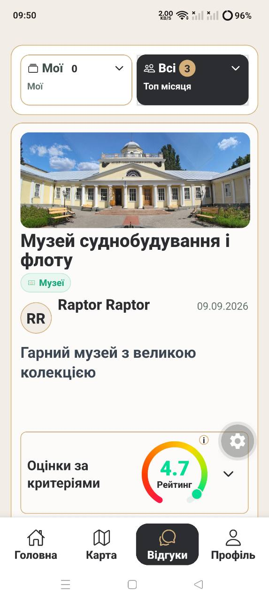

Що створює спільнота
Місця, досвід і репутація
- нові реальні місця з адресою, координатами й фотографіями;
- структуровані відгуки про конкретний досвід;
- приватні підтвердження взаємодії;
- хронологічну історію змін та вирішення проблем.

Місця · люди · представники · репутація
У DOVIQ можна додати будь-яке реальне місце, залишити структурований відгук, підтвердити свій досвід або заявити права на сторінку й стати її офіційним представником. Рейтинг показує оцінку, а окрема надійність пояснює, наскільки цій сукупній оцінці вже можна довіряти.
Миколаїв → область → міста України
Задум
Користувачі створюють і доповнюють карту міста реальними місцями. Відвідувачі публікують досвід. Власники та уповноважені команди підтверджують представництво. Система з’єднує ці ролі так, щоб репутація належала не рекламі, а перевірюваній історії взаємодій.
Що створює спільнота
Що забезпечує DOVIQ
Сторінка об’єднує точну локацію, фото, окремі епізоди досвіду, оцінки за критеріями, приватні докази, офіційні відповіді представника, історію змін і два різні сигнали: рейтинг та його надійність.
Відкрита карта місць. Якщо потрібної точки немає, користувач подає назву, категорію, адресу або координати, опис і підтвердження існування. Після перевірки місце стає публічним.
Офіційне представництво. Власник або уповноважена команда подає claim, проходить перевірку й отримує право офіційно відповідати, пропонувати вирішення та працювати з репутацією.
Доказовий досвід. Чек, фото, номер замовлення чи інший доказ доступний лише уповноваженій перевірці. Публічно показується безпечний статус, а не персональні дані.
Незалежна репутація. Представник не може видалити обґрунтовану критику, змінити оцінку автора, купити надійність або самостійно оголосити проблему остаточно вирішеною.
Як працює модель
Будь-який користувач може подати реальну точку, якої ще немає в DOVIQ.
Модерація звіряє існування, координати, категорію, медіа та можливі дублікати.
Автор оцінює визначені критерії, пише відгук і може додати приватний доказ.
Система рахує оцінку місця й окремо визначає надійність сукупних даних.
Власник або команда заявляє права на сторінку й проходить перевірку.
Представник відповідає, пропонує рішення, подає доказ і залишає прозору історію.
Затверджений дизайн · жива збірка 21 вересня 2026
Графітові активні стани, тепле золото, молочне тло, великі зрозумілі дії та однакова логіка карток — показані не в концептах, а на реальних екранах.



Сила продукту
Користувач створює заявку з адресою або координатами, категорією, описом і доказом існування. Модерація прибирає дублікати та помилки до публікації.
Після claim і перевірки owner, manager або support говорить від імені організації. Analyst може бачити робочі дані, але не видавати себе за представника у відповідях.
До трьох епізодів автора про одне місце утворюють одну хронологічну історію й один усереднений AuthorRating. Повторні візити не перетворюються на штучні незалежні голоси.
Рейтинг показує усереднену якість досвіду незалежних авторів. Надійність показує достатність цієї сукупності з урахуванням кількості авторів, рівня їхнього досвіду та перевірених доказів.
Перевірений чек або інший доказ підтверджує реальність досвіду й додає обмежений внесок до надійності конкретного автора. Він не підвищує оцінку автоматично.
Відповідь представника, запропоноване вирішення, апеляція та зміна оцінки автором залишаються частиною історії. Вирішення не переписує минуле й не призначається бізнесом одноосібно.
Мала кількість голосів стабілізується базовою вагою. Зі зростанням незалежних авторів вирішальними стають реальні дані, а один досвідчений акаунт не може замінити спільноту.
Платними можуть бути робочі інструменти й чітко позначене просування. Рейтинг, надійність, модерація, видимість критики та органічна позиція залишаються незалежними.
Інвестиційна теза
DOVIQ може зростати як єдина технологія локальної репутації, яку щоразу розгортають у новій місцевості з її мовою, категоріями, командами й партнерами.
У кожному місті люди шукають реальний досвід, а бізнеси потребують чесного каналу роботи з репутацією.
DOVIQ Rating v3, надійність, історія автора, приватні докази, claims, ролі й модерація утворюють цілісне репутаційне ядро.
Користувачі додають місця й досвід, представники доповнюють сторінки та відповідають — кожна сторона робить платформу кориснішою для іншої.
Накопичені зв’язки між місцями, авторами, доказами, представниками й вирішеннями неможливо швидко відтворити простим імпортом адрес.
Спільне технологічне ядро поєднується з локальним наповненням, модерацією й партнерствами — від району до країни.
B2B-підписки, multi-location робота, аналітика, віджети, позначене просування та майбутні транзакційні інструменти.
Продуктова ставкаДовіра як інфраструктура, а не окрема функція.
Стратегія ростуДовести модель в одному місті й повторювати запуск територія за територією.
Комерційний принципМонетизувати роботу з репутацією, ніколи не продавати саму репутацію.
Цінність для екосистеми
Для людини
Знайти місце поруч, оцінити не лише бал, прочитати перевірений досвід і побачити, як бізнес реагує на складні ситуації.
Для бізнесу
Офіційно відповідати, виправляти проблеми, бачити теми зворотного зв’язку й доводити якість реальними результатами.
Для міста
Розуміти, які категорії й райони мають сильний сервіс, де бракує пропозиції та які проблеми повторюються — лише на агрегованих даних.
Стійка бізнес-модель
Безкоштовна суспільна цінність створює аудиторію й дані, а комерційний сегмент платить за швидшу, командну та вимірювану роботу зі своєю присутністю — не за кращу репутацію.
Business Pro
Сповіщення, аналітика відгуків, динаміка оцінок, теми проблем і швидкість відповіді.
Teams
Owner, manager, support та analyst, внутрішня відповідальність і керування зверненнями.
Multi-location
Єдиний кабінет для бренду, порівняння локацій і контроль якості в різних містах.
Growth
QR-запрошення, віджети, інтеграції, чітко позначене просування, а згодом — ліди й бронювання.
Комерційна перспектива
Ніколи не продається
Масштабування
Миколаїв — не межа продукту, а перший контрольований ринок. Та сама модель може працювати в районі, громаді, мегаполісі чи іншій країні після локалізації правил і запуску операційної команди.
Пілот
Наповнити ключові категорії, перевірити модерацію, попит і перші B2B-пілоти.
Повторення
Підключати громади й міста за одним контрактом даних, рейтингу, ролей і запуску локального ринку.
Локалізація
Змінювати мову, категорії, правові правила та операційний контур, зберігаючи спільне технологічне ядро.
Платформа
Об’єднати мобільний застосунок, B2B-кабінети, віджети, API й агреговану аналітику без продажу персональних даних.
Спільне ядро: одна база, одна модель ролей, одна логіка trust, захищених доказів і модерації.
Локальний шар: регіони, райони, категорії, команда модерації, стартова база місць і партнерства.
Повторюваний playbook: наповнення → залучення авторів → claim бізнесів → платні пілоти → вимірювання утримання.
Контроль якості: новий регіон відкривається не за кількістю адрес, а коли каталог і модерація вже дають корисний вибір.
Перспектива
Етап 1
300 якісно заповнених місць, 30 заявлених бізнес-профілів і 10 платних пілотів — робочі цілі перевірки, а не обіцянка результату.
Етап 2
Запустити друге й третє місто за одним playbook, виміряти вартість наповнення, модерації та залучення.
Етап 3
Кожен новий регіон збільшує користь карти, профілів бізнесу, перевіреного досвіду й агрегованих індексів.
Мета DOVIQ — зробити чесну роботу видимою, а обґрунтований вибір простішим.
Поточний стан
Реалізовано авторизацію, каталог і карту, подання нових місць, пошук, сторінки фізичних філій, відгуки за критеріями, приватні докази, DOVIQ Rating v3, модерацію, business claims, захищені ролі та хмарну базу даних.
Наступний доказовий етап — контрольований пілот першого локального ринку й перевірка продуктових та комерційних гіпотез на реальних користувачах.
Документована еволюція
02.06–15.07.2026
Перші тези, архітектура, бізнес-план, презентація та робочий код. GitHub baseline зафіксовано 15 липня 2026 року.
13.08.2026–дотепер
Чинна назва, слоган, затверджена айдентика й подальший розвиток того самого продукту.
Відкрита презентація, закритий код
Вихідний код зберігається в закритому GitHub-репозиторії. Публічно доступні презентація, датована історія та SHA-256 контрольного архіву — без можливості відновити з нього код.
GitHub-історія вже містить baseline «Довіра» від 15 липня 2026 року. DOVIQ зафіксовано як еволюцію того самого продукту зі збереженням попередньої історії.